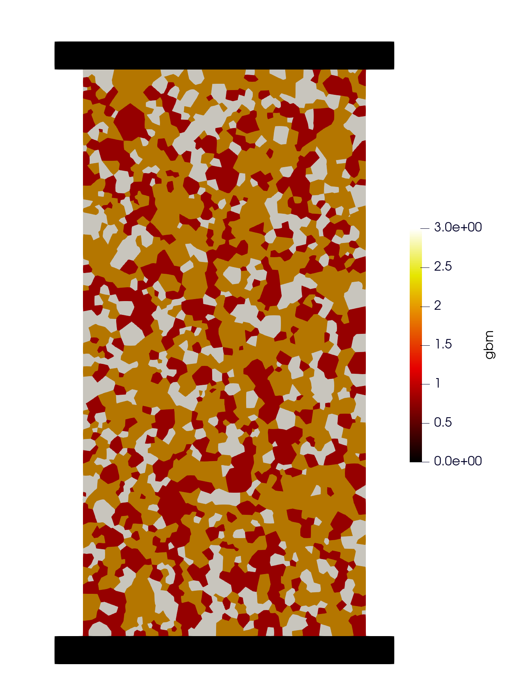

Grain-based model (GBM), interface with Neper#
Grain based modeling for UCS example. The grain-based model is constructed by the Voronoi tessellations fron Neper, .geo or .inp files can be directly imported by OpenFDEM and each tessellation will be created into
a individual physcial group. The user can regroup those tessellations into different minerals by assigning the area ratio, OpenFDEM will create those mineral groups by random to approach the predesigned mineral distributions.

Figure 1: Mineral distribution in UCS sample#
1 Tutorial Prerequistes#
The following files are needed to follow along the tutorial:
Job-1.inp (click to download from GitHub)
2 Main Steps#
Initialize the model.
Create the geometry and the mesh
Assign material properties.
Create the group and assign boundary conditions.
Set the outputs.
3 Codes#
Warning
Please note that, all the setting in the example is based on the developer’s computer. You may need to change these details based on your own environment.
To start with programming, create a new empty input file or copy it from the existing examples (later add the .of extension). Begin writing the following commands:
3.1 Initialize the model#
Create a new run and clean up the old memories.
of.new
Turn on GBM module.
of.config.GBM
Set up the folder name to save your results. Here the folder name is set to be “result”.
of.set.result "result"
Set the number of cores to be used for running this model.
Warning
In the default example, 15 cores will be used for running. To prevent the heavy burden of your computer, please check your computer to change core number you want to use. To check the configuration of your computer, you can go
- Windows:
Task Manager > Performance > CPU > Cores
- Linux:
lscpu
lscpu | egrep ‘Model name|Socket|Thread|NUMA|CPU(s)’
lscpu -p
The cores will be printed on the console when you start a new run, you can also check the information from OpenFDEM kernel itself.
If nothing is set here, serial computing will be used by default.
of.set.omp 15
3.2 Import the geometry and the mesh#
Import the mesh file from
Neper.
of.import 'Job-1.inp'
Regroup the tessellations to three mineral groups, each group is controlled by the area ratio.
of.set.gbm 3 'Qtz' 0.3 'Fel' 0.46 'Bio' 0.24
Create
object:elementgroups for platens and sample.
of.group.element 'rock' range box.in xmin -0.05 xmax 0.05 ymin -0.05 ymax 0.05
of.group.element 'up' range box.in xmin -1.0 xmax 1.0 ymin 0.05 ymax 1.0
of.group.element 'down' range box.in xmin -1.0 xmax 1.0 ymin -1.0 ymax -0.05
Insert cohesive interface in rock sample only.
of.mesh.insert 'rock'
Create
object:cohesivegroups for the interfaces, those groups will be assigned different material properties.
of.group.cohelement.from.gbm 'Qtz-Qtz' 'Qtz' 'Qtz' # Quartz group
of.group.cohelement.from.gbm 'Qtz-Fel' 'Qtz' 'Fel' # Quartz-feldspar group
of.group.cohelement.from.gbm 'Fel-Fel' 'Fel' 'Fel' # feldspar-feldspar group
of.group.cohelement.from.gbm 'Fel-Bio' 'Fel' 'Bio' # feldspar-biotite group
of.group.cohelement.from.gbm 'Bio-Bio' 'Bio' 'Bio' # biotite-biotite group
of.group.cohelement.from.gbm 'Bio-Qtz' 'Bio' 'Qtz' # biotite-Quartz group
3.3 Assign Material and Thermal Properties#
Set the material properties of minerals and platens.
of.mat.element 'Qtz' elastic den 2700 E 70e9 v 0.1 damp 0.6
of.mat.element 'Fel' elastic den 3500 E 45e9 v 0.2 damp 0.6
of.mat.element 'Bio' elastic den 1800 E 20e9 v 0.3 damp 0.6
of.mat.element 'up' elastic den 7000 E 120e9 v 0.3 damp 0.6
of.mat.element 'down' elastic den 7000 E 120e9 v 0.3 damp 0.6
Assign different materials for cohesive interfaces.
of.mat.cohesive 'Qtz-Qtz' EM ten 15e6 coh 30e6 fric 0.1 GI 5e2 GII 50e3
of.mat.cohesive 'Qtz-Fel' EM ten 5e6 coh 10e6 fric 0.3 GI 1e2 GII 50e3
of.mat.cohesive 'Fel-Fel' EM ten 10e6 coh 20e6 fric 0.2 GI 2e2 GII 50e3
of.mat.cohesive 'Fel-Bio' EM ten 5e6 coh 10e6 fric 0.3 GI 1e2 GII 50e3
of.mat.cohesive 'Bio-Bio' EM ten 8e6 coh 15e6 fric 0.2 GI 1.5e2 GII 50e3
of.mat.cohesive 'Bio-Qtz' EM ten 5e6 coh 10e6 fric 0.3 GI 1e2 GII 50e3
Assign different materials for contact.
of.mat.contact 'default' MC fric 0.3
of.mat.contact 'Qtz' 'Qtz' MC fric 0.1
of.mat.contact 'Qtz' 'Fel' MC fric 0.3
of.mat.contact 'Fel' 'Fel' MC fric 0.2
of.mat.contact 'Fel' 'Bio' MC fric 0.3
of.mat.contact 'Bio' 'Bio' MC fric 0.2
of.mat.contact 'Bio' 'Qtz' MC fric 0.3
3.4 Create Groups and Assign Boundary Conditions#
Create
object::nodegroups.
of.group.nodal.from.element 'up' 'up'
of.group.nodal.from.element 'down' 'down'
Assign the nodal boundaries. In this model, top, bottom and right boundaries are fixed in both x and y directions.
of.boundary.nodal.velocity 'up' x 0.0 y -0.05
of.boundary.nodal.velocity 'down' x 0.0 y 0.05
3.5 Set the Outputs#
Set the output interval to be every 500 steps and output all fields variables and fracture variables.
of.history.pv.interval 50000
of.history.pv.field default
of.history.pv.fracture default
The program will run 10000000 steps in total.
of.step 1000000
Finalize the model and clear all the temporary memories.
of.finalize
Save the notepad and double click the .of file to run the program.
4 Run the Program#
Wait for updates.
5 Results#
Wait for updates.
6 Full Script#
GBM.of (click to download from GitHub)
# initialization, this command is to clear the memory in your last run, it is not
# mandatory but strongly recommend.
of.new
of.config.GBM
# Set the path folder of your output results, //result// in the same path of your input
# file will be created by default
of.set.result "result"
# Set the number of cores you want to use, the parallization will be automatically
# turned on when you use the following command, otherwise the serilization will be used
# by default
of.set.omp 15
##################################### import mesh #######################################
of.import 'Job-1.inp'
of.set.gbm 3 'Qtz' 0.3 'Fel' 0.46 'Bio' 0.24
of.group.element 'rock' range box.in xmin -0.05 xmax 0.05 ymin -0.05 ymax 0.05
of.group.element 'up' range box.in xmin -1.0 xmax 1.0 ymin 0.05 ymax 1.0
of.group.element 'down' range box.in xmin -1.0 xmax 1.0 ymin -1.0 ymax -0.05
# insert cohesive elements
of.mesh.insert 'rock'
# Group Cohesive Elements
of.group.cohelement.from.gbm 'Qtz-Qtz' 'Qtz' 'Qtz' # Quartz group
of.group.cohelement.from.gbm 'Qtz-Fel' 'Qtz' 'Fel' # Quartz-feldspar group
of.group.cohelement.from.gbm 'Fel-Fel' 'Fel' 'Fel' # feldspar-feldspar group
of.group.cohelement.from.gbm 'Fel-Bio' 'Fel' 'Bio' # feldspar-biotite group
of.group.cohelement.from.gbm 'Bio-Bio' 'Bio' 'Bio' # biotite-biotite group
of.group.cohelement.from.gbm 'Bio-Qtz' 'Bio' 'Qtz' # biotite-Quartz group
################################# assign material parameters ############################
of.mat.element 'Qtz' elastic den 2700 E 70e9 v 0.1 damp 0.6
of.mat.element 'Fel' elastic den 3500 E 45e9 v 0.2 damp 0.6
of.mat.element 'Bio' elastic den 1800 E 20e9 v 0.3 damp 0.6
of.mat.element 'up' elastic den 7000 E 120e9 v 0.3 damp 0.6
of.mat.element 'down' elastic den 7000 E 120e9 v 0.3 damp 0.6
# assign materials for CZM
of.mat.cohesive 'Qtz-Qtz' EM ten 15e6 coh 30e6 fric 0.1 GI 5e2 GII 50e3
of.mat.cohesive 'Qtz-Fel' EM ten 5e6 coh 10e6 fric 0.3 GI 1e2 GII 50e3
of.mat.cohesive 'Fel-Fel' EM ten 10e6 coh 20e6 fric 0.2 GI 2e2 GII 50e3
of.mat.cohesive 'Fel-Bio' EM ten 5e6 coh 10e6 fric 0.3 GI 1e2 GII 50e3
of.mat.cohesive 'Bio-Bio' EM ten 8e6 coh 15e6 fric 0.2 GI 1.5e2 GII 50e3
of.mat.cohesive 'Bio-Qtz' EM ten 5e6 coh 10e6 fric 0.3 GI 1e2 GII 50e3
# assign materials for contacts
of.mat.contact 'default' MC fric 0.3
of.mat.contact 'Qtz' 'Qtz' MC fric 0.1
of.mat.contact 'Qtz' 'Fel' MC fric 0.3
of.mat.contact 'Fel' 'Fel' MC fric 0.2
of.mat.contact 'Fel' 'Bio' MC fric 0.3
of.mat.contact 'Bio' 'Bio' MC fric 0.2
of.mat.contact 'Bio' 'Qtz' MC fric 0.3
##################################### create groups #####################################
of.group.nodal.from.element 'up' 'up'
of.group.nodal.from.element 'down' 'down'
################################### assign boundaries ###################################
# boundaries can be assigned after you define the groups
of.boundary.nodal.velocity 'up' x 0.0 y -0.05
of.boundary.nodal.velocity 'down' x 0.0 y 0.05
####################################### set output ######################################
# Set the interval of writing ParaView results.
of.history.pv.interval 50000
of.history.pv.field default
of.history.pv.fracture default
##################################### execute model #####################################
# to excuate the model
of.step 1000000
# finalize the model and clear the memory
of.finalize